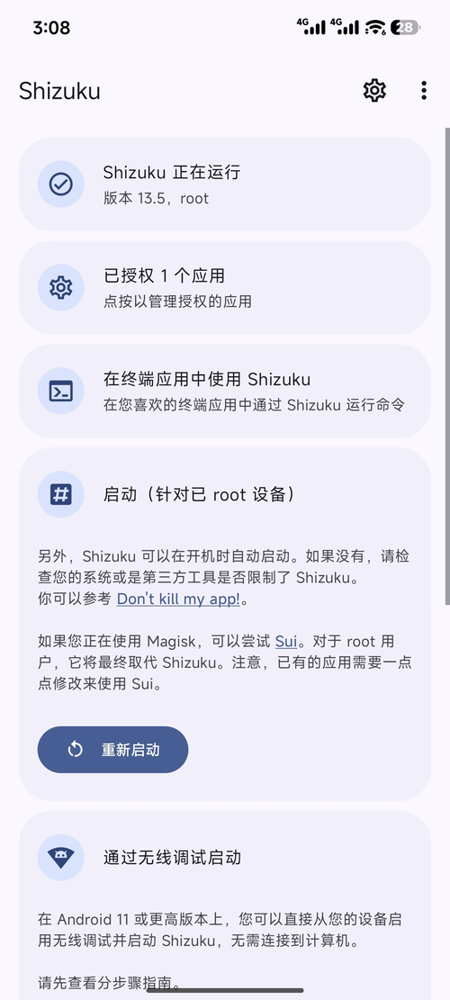
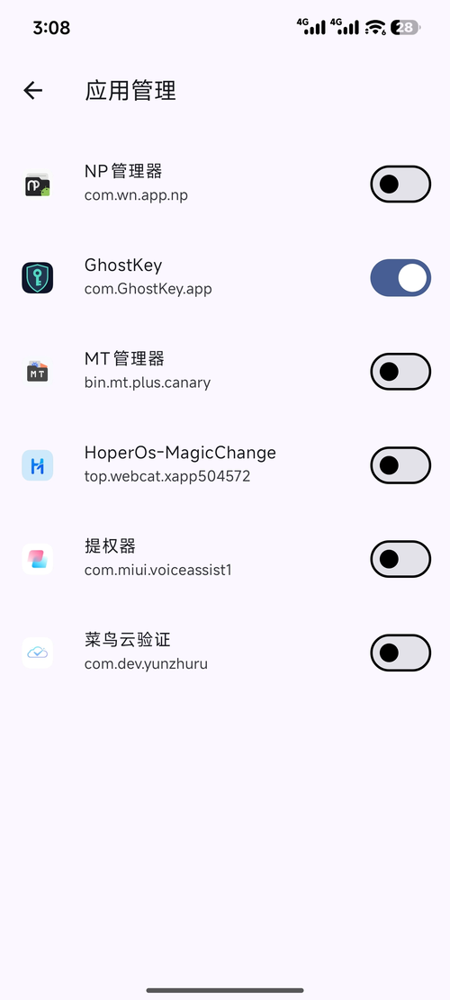
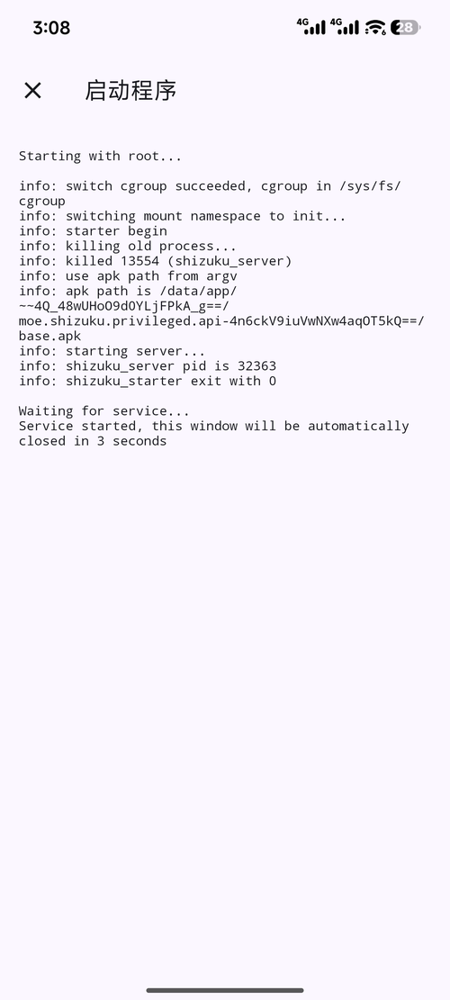
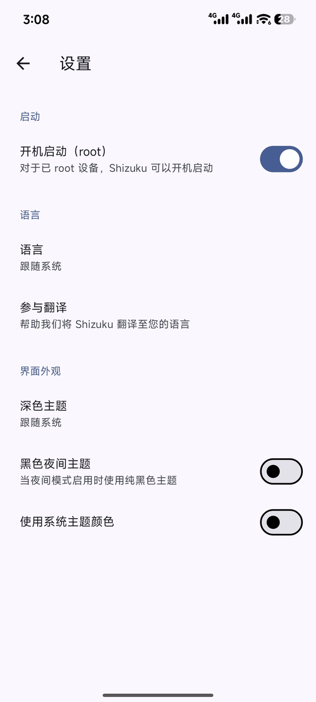

把 root 的活，
交给它转一手。
Shizuku 是开源的权限中继。应用不用自己拿到 root，通过它的服务进程就能执行特权操作——授权一次，用的时候随取随用，不想给了关掉开关就完事。GhostKey 的执行入口，也是它。



- 1次授权装一次、授一次，之后不用反复确认
- 13.6.0版本versionCode 1086，安装包 2.5 MB
- 7.0+系统Android 7.0 起，无线调试启动要 11 以上
- 开源免费RikkaApps 出品，源码公开，无广告
它不是 root，但它让应用不用 root 也能干 root 的活。
以前想让一个应用执行特权命令，只能整机提权；Shizuku 换了个思路：权限只留在服务进程里，应用拿着 API 去点单，用多少给多少。
权限在服务里，不在应用里
服务进程以 shell 或 root 身份跑着，应用只能通过 API 请求执行。它自己没有那把钥匙，也就没法把钥匙藏起来用。
按应用单独开关
授权列表里一个应用一行，开着就是允许，关掉立刻失效。想查是谁在用，打开「已授权 N 个应用」就看得到。
两种启动方式，都行
已 root 的设备直接在应用里点「重新启动」，走 root 拉起服务；没 root 就用无线调试，Android 11 起不用连电脑；老版本还能用 adb 连一次。
不止是给 GhostKey 开门
冻结应用、改系统设置、跑终端命令、给别的调试工具当前置——凡是要 shell 权限的操作，都能借它这一手，不用为每件事都去 root 一遍。
四页：看状态、看启动日志、管授权、调偏好。
首页只回答一个问题——服务起没起、谁拿到了授权。启动程序的输出直接摊开，pid、退出码都写着，出了问题不用猜。

三步，把服务开起来。
装 APK，打开看首页
装完打开，先看第一张卡写的是什么。「Shizuku 正在运行」说明服务已经起来了，下面会标出是以 root 还是 shell 身份在跑。
把服务拉起来
已 root 就点「重新启动」；没 root 用「通过无线调试启动」，开发者选项里配对一次，Android 11 起不用连电脑；再不行用 adb 连一次也行。
回到 GhostKey 授权
打开 GhostKey，它会弹「服务未运行」或者直接请求授权。允许之后状态变成「已连接 · root(0)」，就能开始提权了。
和直接 root 比，差在哪。
Shizuku 换的不是权限总量，是权限的存放位置。代价是有些事它做不了，收益是你能随时收回。
整机 root 的代价
- 所有应用共享同一套权限边界，谁都能蹭。
- 开机就得挂着守护进程，权限一直在。
- 想收回，只能卸载管理器甚至刷回去。
- 部分银行、支付、游戏直接拒绝运行。
Shizuku
- 按应用授权，一个开关就是一道门。
- 服务可以随用随起，不用一直挂着。
- 关掉开关立刻失效，不用改系统。
- 不写系统分区，卸载即清理干净。
参数
这页给的是可直接安装的中文版安装包，与开源项目同源。授权谁、给多少，始终由你在应用管理里决定。
| 系统要求 | Android 7.0 及以上（minSdk 24，targetSdk 36）；无线调试启动需 Android 11 及以上 |
|---|---|
| 安装包 | 2.5 MB · versionCode 1086 |
| 架构 | arm64-v8a、armeabi-v7a、x86、x86_64 |
| 包名 | moe.shizuku.privileged.api |
| 权限 | 开机自启、前台服务、网络、通知、修改安全设置 |
| 启动方式 | root 启动 / 无线调试配对 / adb 连接 |
| 授权方式 | 应用内弹窗确认，可在「应用管理」逐项开关 |
| 来源 | RikkaApps 开源项目，本页为其中文说明与安装入口 |
先装它，再去装 GhostKey。
两个一起用：Shizuku 负责把权限递过来，GhostKey 负责把 root 提上去。顺序装反了也没事，GhostKey 会提示你去把服务开起来。
下载 APK · v13.6.02.5 MB · 更新于 2026 年 11 月 8 日
说明：GhostKey 的授权入口。装好后用 root 或无线调试把服务开起来。
常问的几件事
不 root 能用 Shizuku 吗？
能。没 root 就走无线调试：开发者选项里打开「无线调试」，配对一次，Android 11 起全程不用连电脑。代价是设备重启后服务会掉，重新启动一次就行。已 root 的设备可以开「开机启动」，重启也不用管。
GhostKey 为什么非要它？
GhostKey 自己不申请 root，它需要一个已经跑起来的特权进程来执行那五段流水线。Shizuku 正好提供这个入口，而且授权是你一次一次点出来的，不是装完就有。
授权之后，它能背着我干什么吗？
不会。授权只对请求方开放它声明的 API，不是给一个万能 shell。你在应用管理里关掉哪个开关，那个应用立刻失去访问；不放心就全关，服务还在，谁都借不到。
重启后 Shizuku 掉了怎么办？
没 root 的设备重启必然掉服务。打开 Shizuku 点一次「通过无线调试启动」，或者用 adb 连一次。觉得麻烦就给设备做一次常驻 root（KernelSU / Magisk），再打开「开机启动（root）」。
和 SuperSU、Magisk 那些是一个东西吗？
不是。那些是给你整机 root 权限的；Shizuku 是拿到权限之后，把权限借给别的应用用的一种方式。它不替代 root，它是在「有权限」和「要权限的应用」之间加了一层可管可撤的中转。
这页是你做的吗？
应用不是。Shizuku 由 RikkaApps 开发并开源，这里提供的是可直装的中文版安装包、中文说明，以及和 GhostKey 搭配的完整步骤。原项目在 GitHub 上公开，源码和许可见仓库。